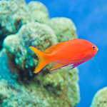

Fish are animals with backbones that live in water, including oceans, rivers, lakes, and streams. Most fish use gills to take oxygen from the water and fins to help them swim, steer, and stay balanced. They come in many shapes, sizes, and colors, from small, brightly colored fish to large sharks. Some species live in freshwater, while others live in saltwater, and certain species can move between both environments. Their varied bodies and adaptations allow them to survive in many different underwater habitats.
Their diets also vary: some eat algae or other plant material, while others feed on insects, smaller fish, or other animals. Some fish live mostly alone, while others swim together in coordinated groups called schools. Schooling can make it harder for a predator to single out one fish and can help fish find food. From their feeding habits to their ways of moving and protecting themselves, fish show a remarkable variety of adaptations to underwater life.
